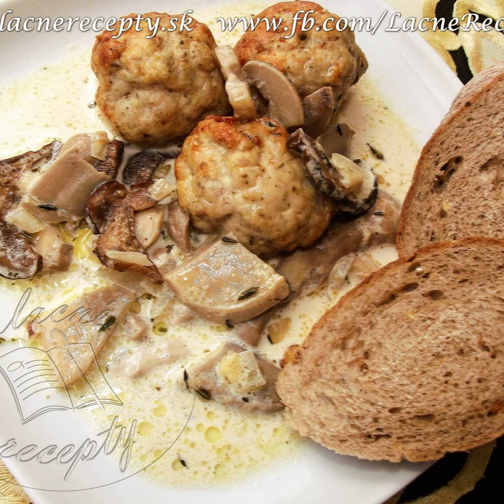

Bravčové mäso podľa @lacnerecepty — Normy Jedál
Mäsko s hubovou omáčkou.. ♥️
https://www.lacnerecepty.sk/recept/masove-gulky-s-hubovou-omackou #slovakfood #slovakia #slovenskakuchyna #prezaciatocnikov #jednoducherecepty #lacnerecepty #mletemaso #bravcovemaso #mnamka #obed #vecera